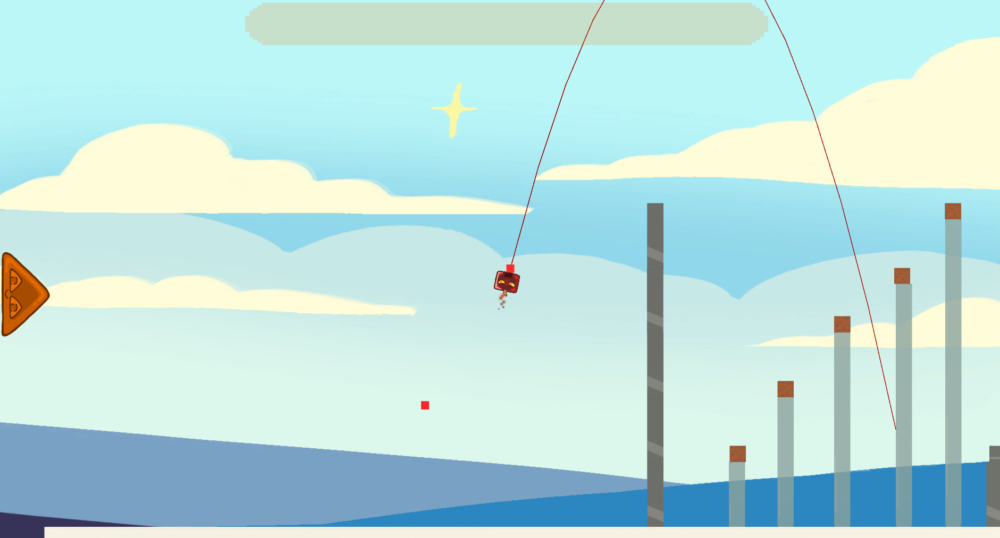

Projectile selection
projectile ability system
Slime-A-Pult was a school project made in a team of 2 artists, a designer and me as the programmer. The only requirement for this project was for the game to have emergent gameplay.
The goal of the game we made is to destroy different kinds of fortresses by launching different kinds of slimes at them. To achieve emergent gameplay, the player has the freedom to choose which slimes to launch and come up with new strategies.
The goal of each level is to destroy as much as possible, after reaching a certain percentage the player can choose to end the level which will show the percentage of destroyed blocks and how many slimes the player launched.
The player has the freedom to strategize and pick which slimes to launch, the available slimes are:
Normal slime: This standard slime has no ability, it will deal damage when hitting blocks
Metal slime: This slime also has no ability but is a lot heavier than the normal slime, it is easier to topple structures with it.
Slingshot slime: This slime is not meant to do direct damage, when it's ability is activated it will transform in a new catapult that can catch slimes and blocks that the player can launch again.
Bouncy slime: A slime similar to the slingshot slime, this slime transforms into a trampoline that boosts slimes and blocks bouncing off of it.
Bomb slime: A slime that explodes when its ability activates, the explosion will launch nearby blocks and slimes.
Ice slime: This slime will also explode when its ability activates, instead of displacing objects it will freeze them, this slime can do damage on its own but is usually used to weaken structures for other slimes.
This script stores the prefabs of each projectile and also generates the buttons in the UI, this makes it easy to add new slimes as the prefab can
using System.Collections.Generic;
using UnityEngine;
using UnityEngine.UI;
public class ProjectileSelector : MonoBehaviour
{
[SerializeField]
List<GameObject> ProjectileList;
[SerializeField]
List<GameObject> ProjectileDBGList;
[SerializeField]
bool DBG;
[SerializeField]
GameObject Button;
Animator animator;
void Start()
{
GenerateList();
animator = GetComponentInParent<Animator>();
}
public void ToggleWindow()
{
animator.SetBool("Open", !animator.GetBool("Open"));
}
void GenerateList()
{
foreach(GameObject Projectile in ProjectileList)
{
GameObject Btn = Instantiate(Button, transform);
Btn.GetComponent<Image>().sprite = Projectile.GetComponent<ProjectileData>().Icon;
Btn.GetComponent<Button>().onClick.AddListener(delegate { ToggleWindow(); });
Btn.GetComponent<Button>().onClick.AddListener(delegate { GameManager.Instance.MainSlingshot.SpawnProjectile(Projectile); });
}
if (DBG)
{
foreach (GameObject Projectile in ProjectileDBGList)
{
GameObject Btn = Instantiate(Button, transform);
Btn.GetComponent<Image>().sprite = Projectile.GetComponent<ProjectileData>().Icon;
Btn.GetComponent<Button>().onClick.AddListener(delegate { ToggleWindow(); });
Btn.GetComponent<Button>().onClick.AddListener(delegate { GameManager.Instance.MainSlingshot.SpawnProjectile(Projectile); });
}
}
}
}